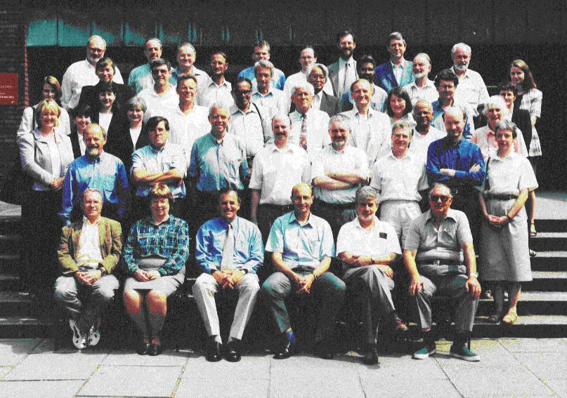

IUCr Journal Editors and Editorial Staff in Manchester July 1999

In the caption below, co-editors are identified with titles,
initials and surnmes, editorial staff by their first names and surnames.
- Back Row:
- Dr H.M.Einspahr, Dr W.C.Stallings, Dr M.R.Taylor, Michael Hoyland, Sean Conway, Brian McMahon, Prof. G.Kostorz
- Fourth Row:
- Nicola Ashcroft, Gillian Holmes, Dr F.R.Fronczek, Prof. D.Schwarzenbach, Dr A.Oskarsson, Prof. Y.Ohashi
- Third row:
- Andrea Sharpe (Promotions Officer), Louise Clark-Jones, Katie Moore, Sue King, Prof. C.E.P.Lecomte, Prof. M.Vijayan,Prof. A.Kalman, Dr A.M.Moore, Dr M.J.Adams, Prof. G.R.Desiraju, Prof. G.B.Jameson, Dr M.M.Harding, Jill Bradshaw
- Second Row:
- Prof. J.Vicat, Dr A.L.Spek, Prof. G.Ferguson, Dr A.Linden, Dr A.J.Blake, Prof. W.Clegg, Peter Strickland,
- Front row:
- Prof. A.M.Glazer, Dr J.P.Glusker, Prof. S.R.Hall, Prof. J.R.Helliwell, Dr F.H.Allen, Prof. A.Authier
Page last updated 16 Oct 1999
BCA Home page WebMaster
BCA@ISISE.RL.AC.UK
 Click here to return to BCA homepage
Click here to return to BCA homepage